Pe proiecte
Galerie foto
Eco Feel – Simte ecologic! (2024–2025)


Patrimoniul cultural al germanilor din Bucovina (2024)


Patrimoniul cultural al huțulilor din Bucovina (2023)

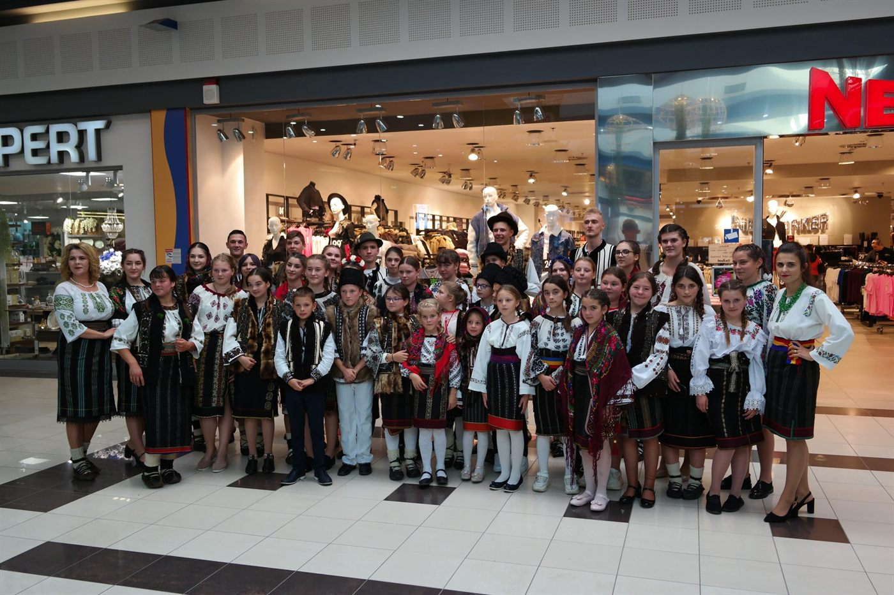
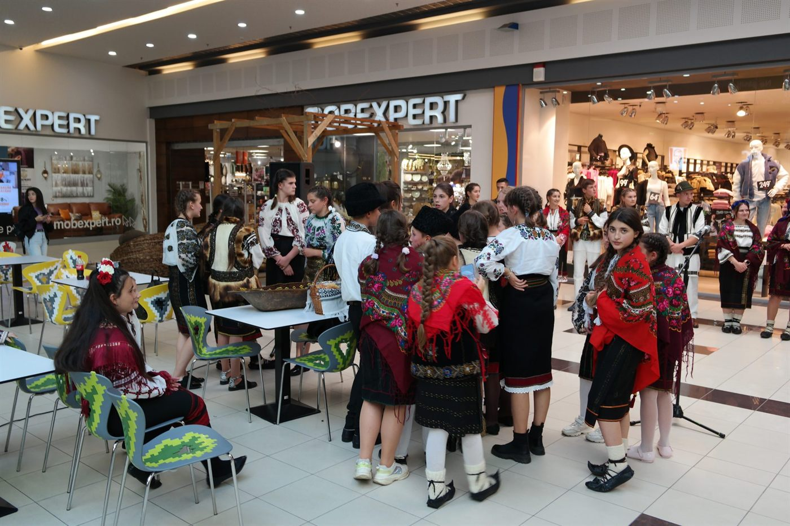
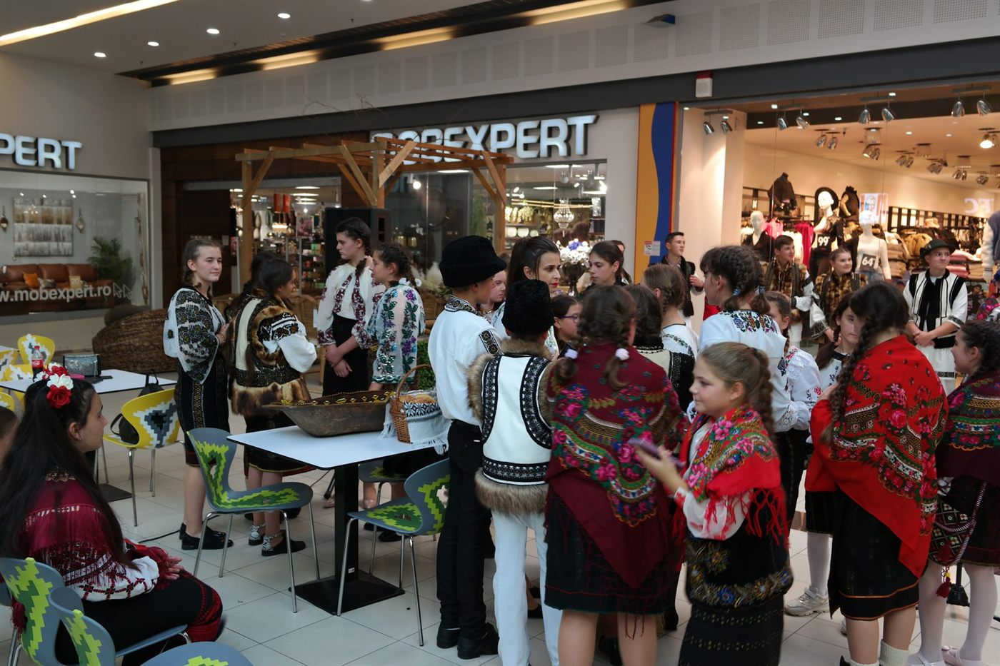
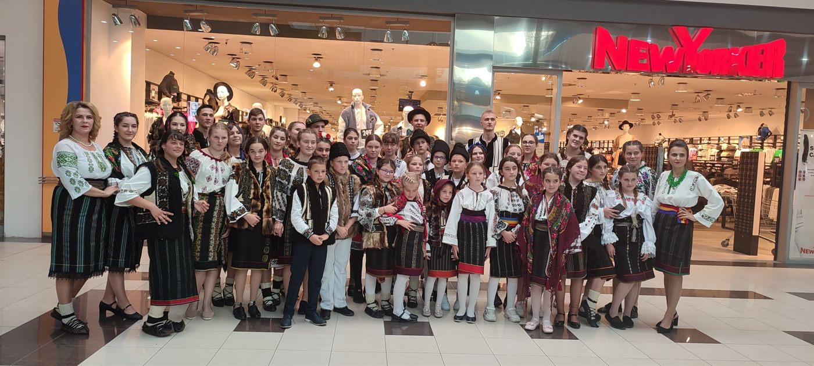
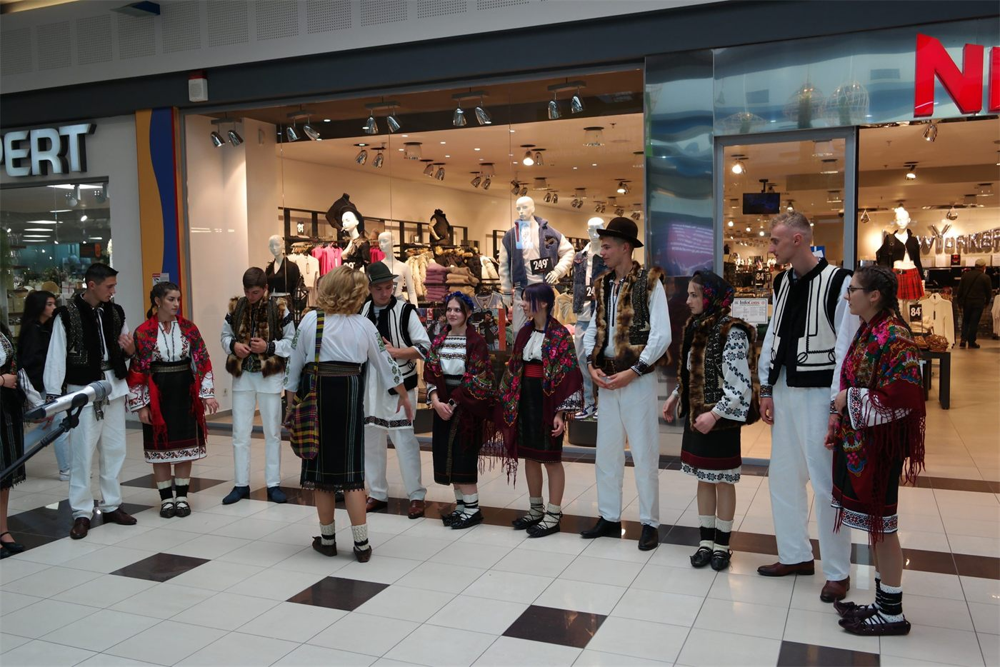
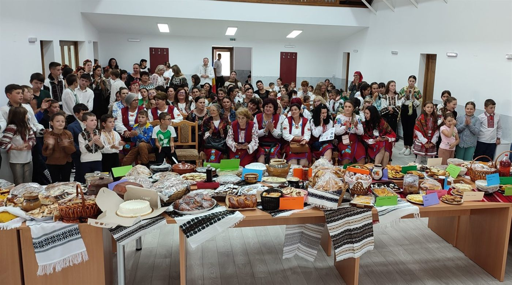
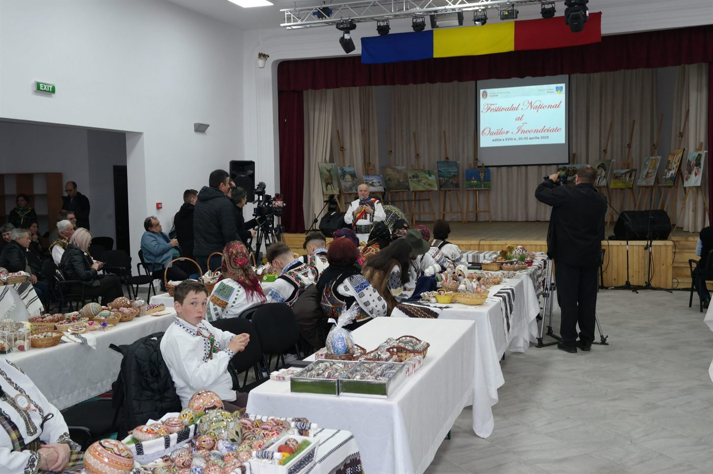
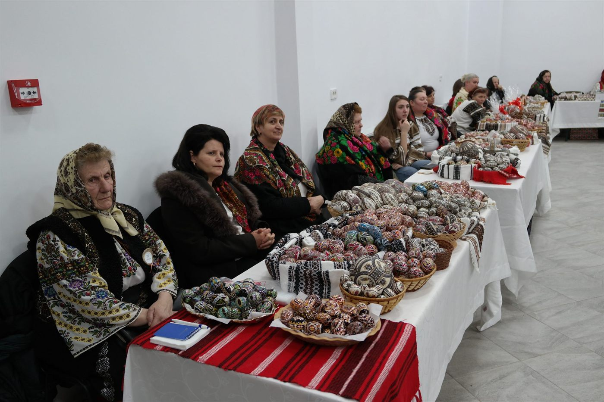
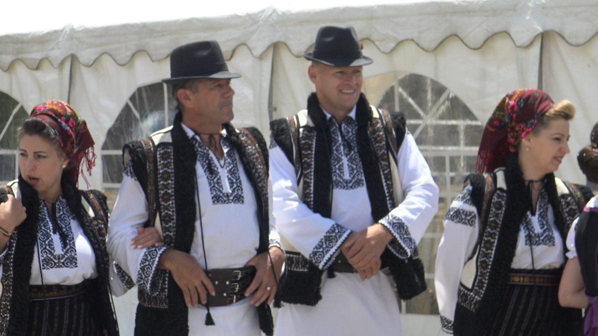
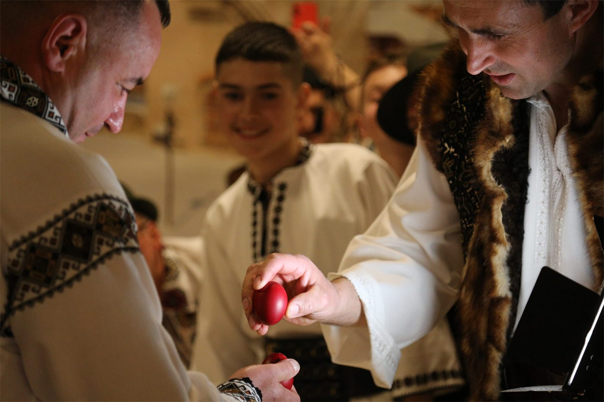
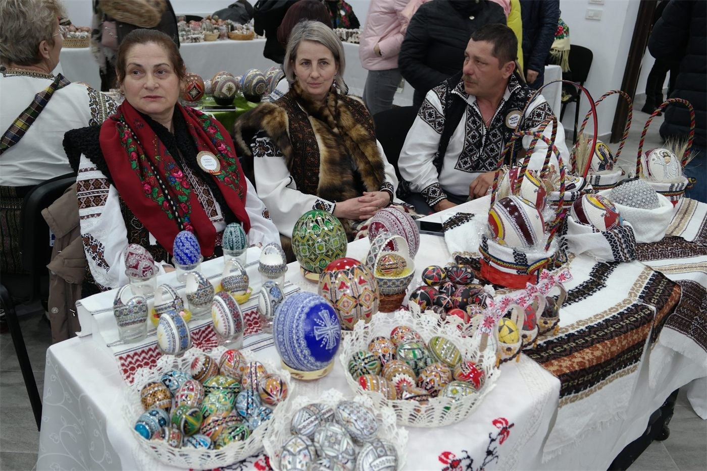
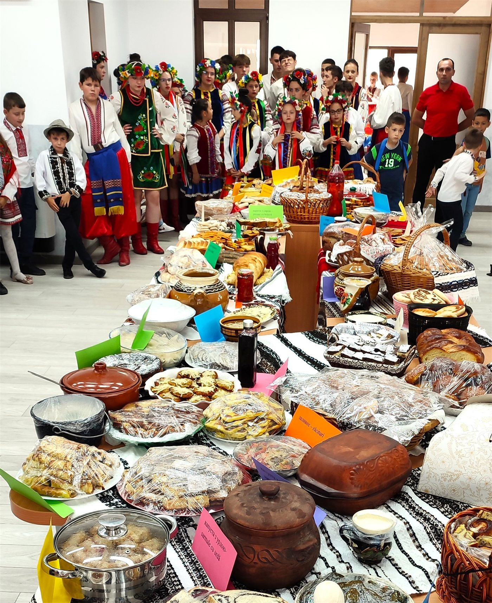
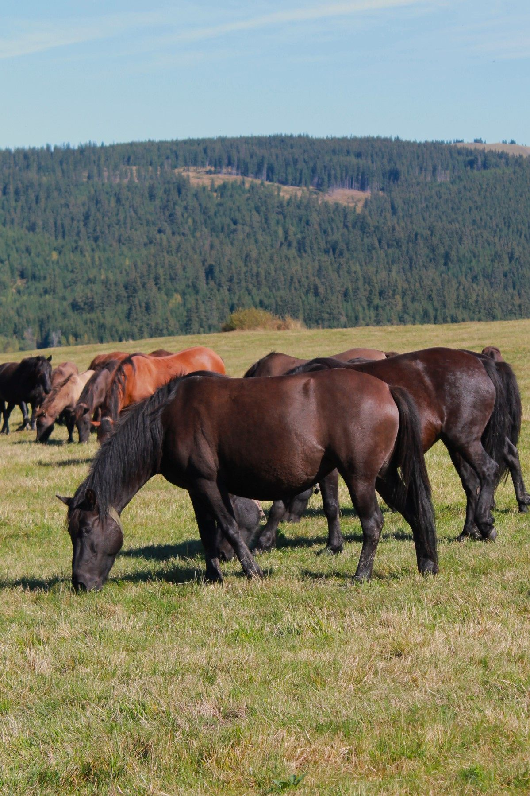
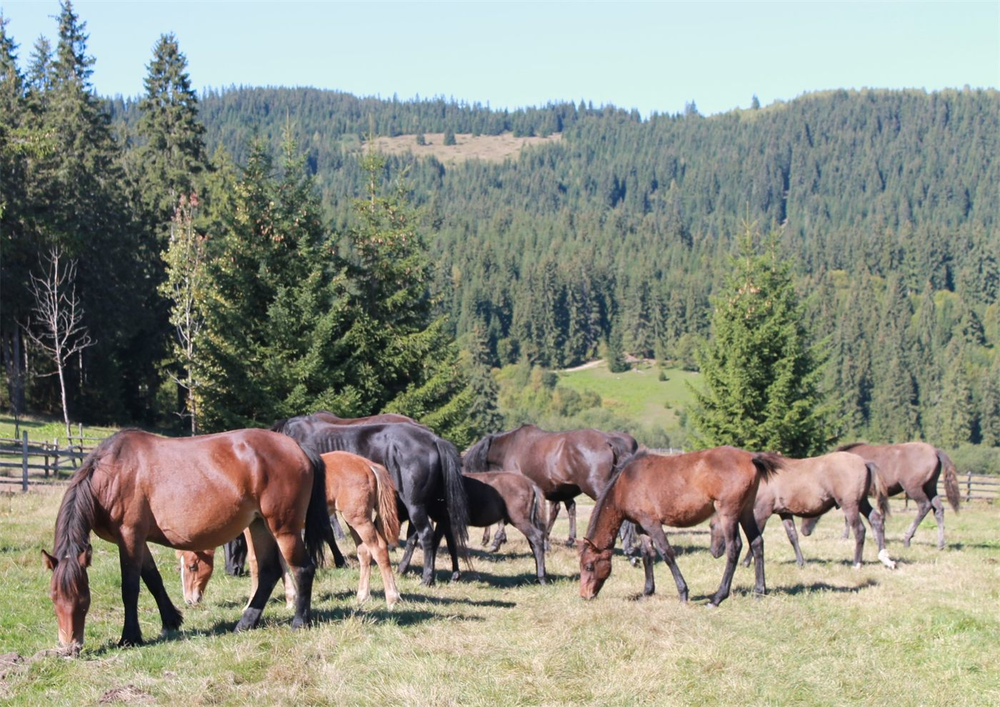
INAPP (2018–2019)